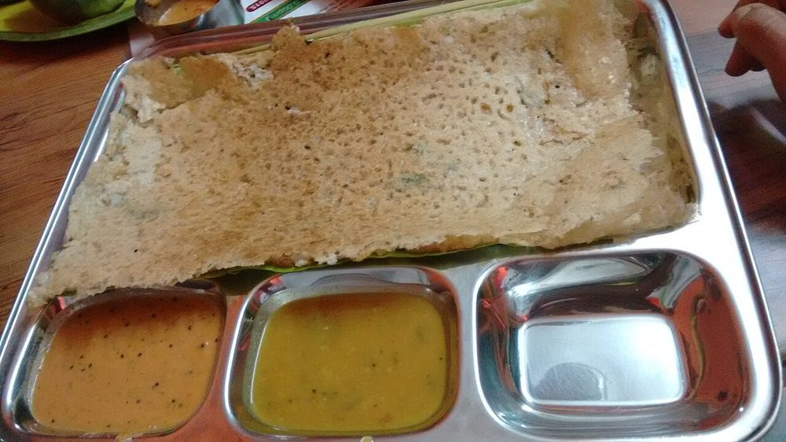

Bajre ki Raab
a thin savoury millet gruel loosened with buttermilk and warmed with dry ginger

Contains: milk
Checked against the ingredient list for ten allergens: milk, egg, fish, crustaceans, tree nuts, peanuts, sesame, mustard, soy and gluten. Brands vary, so read the label on anything new to you.
Ingredients
Quantities for 4.
- 5 tbsp Bajra Flour
- 600ml, at room temperature Buttermilkslightly sour is traditional
- 1 tbsp Ghee
- 1/2 tsp Ajwain
- 3/4 tsp Dry Ginger Powderthe warming element the dish is drunk for
- 1/4 tsp Turmericoptional
- 1 tbsp, grated Jaggeryfor the sweet version; leave it out for a savoury raaboptional
- to taste Salt
- 400ml Water
Cookware
stovetop
Before you start
- Bring the buttermilk to room temperature. Fridge-cold buttermilk hitting hot flour makes lumps instantly.
- This is drunk from a glass or a bowl, not eaten with a spoon, so aim for the consistency of thin cream.
- In Rajasthani homes raab is made in winter and given to new mothers and to anyone with a cold, which is why the dry ginger is not optional.
Method
- Heat the ghee in a heavy pan on low and add the ajwain. It should sizzle gently, not pop, about 15 seconds.
- Tip in the bajra flour and roast it on low heat 4-5 minutes, stirring continuously, until it darkens slightly and smells like toasted grain.Unroasted bajra flour tastes chalky and sits heavy. This step is the whole dish.
- Pour in 400ml water a little at a time, whisking hard after each addition so the flour stays smooth.Water in stages, not all at once. Once lumps form you cannot whisk them out.
- Bring to a boil, then simmer on low 8 minutes, stirring often, until it thickens to a pourable gruel.
- Take the pan off the heat and let it cool for 2 minutes.
- Whisk the buttermilk smooth and stir it in gradually. Return to the lowest heat for 3 minutes, stirring, and do not let it boil.A boil will split the buttermilk into curds and whey.
- Season with salt, the dry ginger powder and the turmeric. Stir in the jaggery now if you want the sweet version.
- Serve hot in glasses. It thickens as it stands, so loosen with warm water if it sits.
Storage
Best drunk within a few hours of making. Keeps 1 day refrigerated; reheat on low without boiling and thin with warm water, as it sets thick when cold.
Nutrition Good estimate
Low protein: 7 g a serving, 16% of the calories
| Per serving177 g | Per 100 g | |
|---|---|---|
| Calories | 178 kcal | 101 kcal |
| Protein | 7.1 g | 4 g |
| Carbohydrate | 25.8 g | 15 g |
| of which sugars | 12.1 g | 7 g |
| Fibre | 1.0 g | 1 g |
| Fat | 5.7 g | 3 g |
| of which saturated | 3.1 g | 2 g |
| of which unsaturated | 2.2 g | 1 g |
Ingredients given to taste count as zero, so the real figures run a little higher. Nearest database match used for bajra flour, jaggery. Estimated from raw ingredients using USDA FoodData Central.
Times, yields, allergens and nutrition are guidance. Use your own judgement on doneness and on storing. More in About.